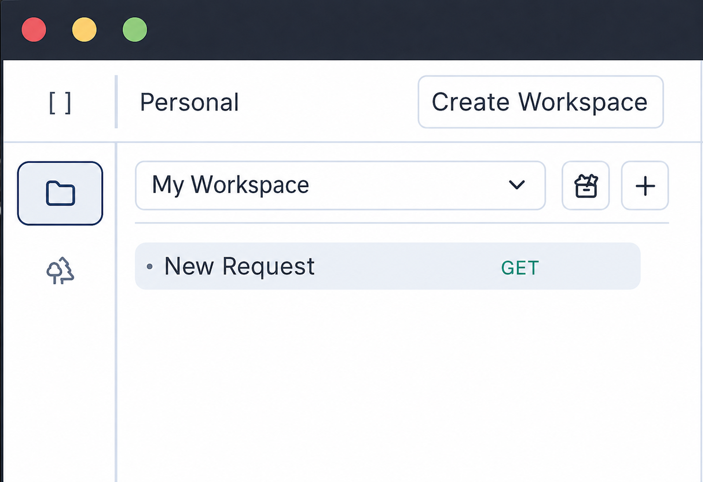
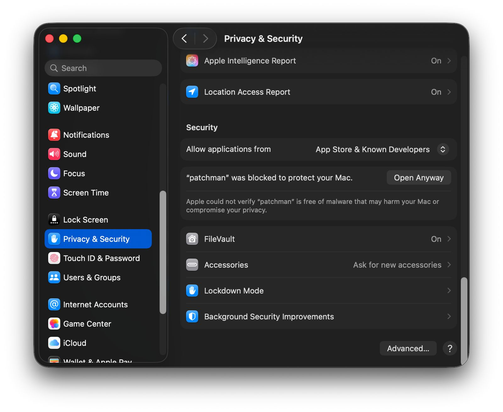
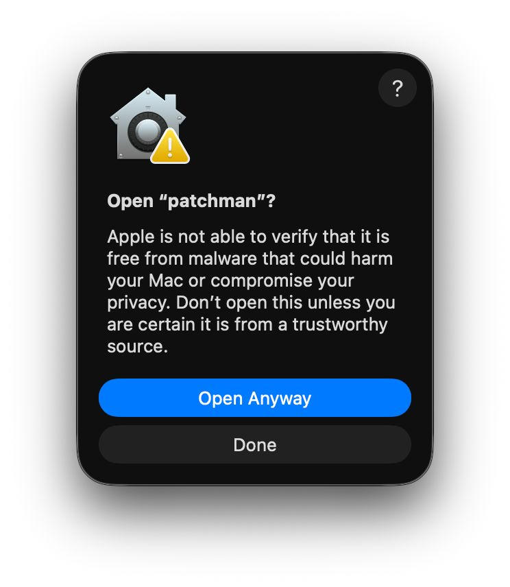

Git-friendly API collections
Store workspaces, collections, requests, and drafts as files. Branch, review, diff, and merge API changes like source code.
Patchman is a lightweight, Git-friendly API client for developers who want fast local workflows, simple REST testing, workspace groups, and request files that fit naturally beside their code.
Patchman focuses on the core API client workflow: create REST requests, organize collections, inspect responses, and collaborate with the tools developers already use.
Store workspaces, collections, requests, and drafts as files. Branch, review, diff, and merge API changes like source code.
Open quickly, send requests, inspect responses, and keep your API workflow moving with fewer workspace distractions.
A smaller desktop app foundation with native capabilities, efficient performance, and cross-platform build potential.
Move through request work with fewer pauses: open, send, inspect, commit, and keep momentum across the team.
What's new
Update Notes brings a cleaner interface and practical workflow improvements for preparing, editing, and reusing API requests.

Improved several interface details to make Patchman feel cleaner, more consistent, and more comfortable to use.
Added support for formatting JSON in the request body, making it easier to read, edit, and debug during API testing.
Added support for running JS before sending a request to prepare dynamic values, update environments, generate tokens, or customize request data.
Available request values to manipulate:
request.url, request.headers, request.body
Read Preparation docs
Teams comparing API clients often want a workflow that feels closer to their codebase: lighter startup, local files, fewer account dependencies, and request collections that can be reviewed in Git.
Patchman is built around that workflow. It is a lightweight Postman alternative for developers who want everyday HTTP and REST testing while keeping collaboration close to the project.
Patchman treats API requests as project assets, not hidden workspace data. That means your API workflow can live beside your codebase, inside a repository, and inside your normal development process.
For teams, this keeps collaboration direct: create a branch, update a request, commit it, and let the team review the change.
$ git checkout -b add-login-request
$ git status
modified: workspaces/core/auth/login
$ git add .
$ git commit -m "Add login API request"
Done. Request ready for review.
$ git push
Short answers for developers searching for a lighter API client, REST client, or local-first API testing workflow.
Yes. Patchman is a lightweight Postman alternative focused on fast API request testing, local collections, and developer workflows that fit naturally with Git. Patchman is independent and is not affiliated with Postman.
Patchman is for everyday HTTP and REST API testing: building requests, organizing endpoints, checking responses, and keeping API examples ready for development and QA.
Git-friendly API clients make request changes visible. Teams can branch, review, diff, and merge API collections alongside the application code that depends on them.
macOS alpha notice
We are truly sorry. In this Alpha version, Patchman does not have an Apple Developer certificate yet, so macOS may block the app the first time you open it. Code signing is planned for the Beta version. For now, after trying to launch Patchman, open System Settings > Privacy & Security and allow the app from there.


Try the lightweight, Git-friendly API client for local REST testing when releases are available for your operating system.
Latest version: v0.2.1-1 on PatchmanPoint/releases